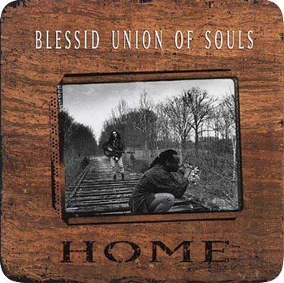

You need to know about Eliot Sloan.

My songs in up in ur iPod.
Grab your earphones, your wallet, and start dropping songs on your cart like Cam Newton, and make Eliot Sloan your own.For fans, by... well, nerds.
This site was coded by @jonschlinkert to bring peace to the world, deliver water to starving honey badgers, and cure skin rashes everywhere..
Made for everyone.
Eliot made it clear that this site needs to look and behave great in the latest desktop browsers (as well as IE7!), but in tablet and smartphone browsers via responsive CSS as well.
Built with Eliot Sloan.


Follow Eliot on Twitter
-
 about 4 hours ago
Fandalism Open Jam Session and Musician Gathering at Washington Square Park in NYC
owl.li/eh8db
-
@
Fandalism
@
Pud
about 4 hours ago
Fandalism Open Jam Session and Musician Gathering at Washington Square Park in NYC
owl.li/eh8db
-
@
Fandalism
@
Pud
-
about 9 hours ago
Comedian Tig Notaro’s Legendary Set Now Available Through Louis C.K.
ow.ly/egYpX
-
@
LouisCK
-
about 9 hours ago
Dick Costolo (
@
dickc
), CEO of Twitter, an Improv Master Writing Its Script
owl.li/egVzc
via
@
NickBilton
-
about 10 hours ago
Worries Over Defense Dept. Money for ‘Hackerspaces’
owl.li/egVhQ
via
@
NYTimes